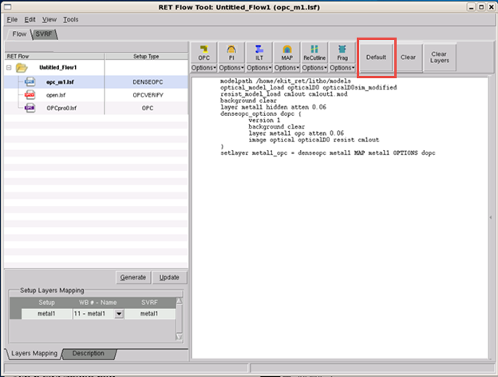

If you want to
create a new setup file, you can start from a default generated
by Calibre WORKbench.
Procedure
- Click
the Default button in
any session. This causes the viewer to automatically read data from
the open layout and to construct a starting setup file based on
the state of the GUI and the current working directory.
Alternatively, when adding
a new session ( in the RET Flow Tool) you
can select Generate Default Session when choosing your session.
- The RET Flow Tool writes the
constructed setup file to the currently active mode.
Figure 1. RET Flow Tool Default
(Calibre nmOPC Example)